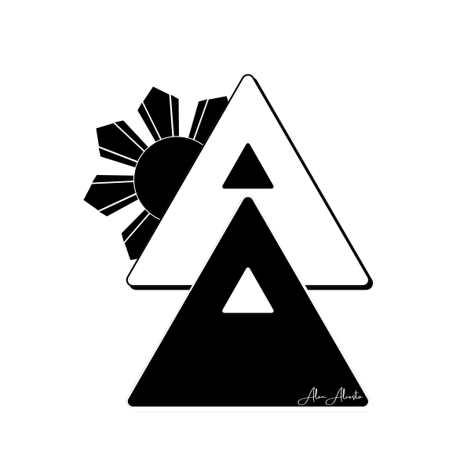
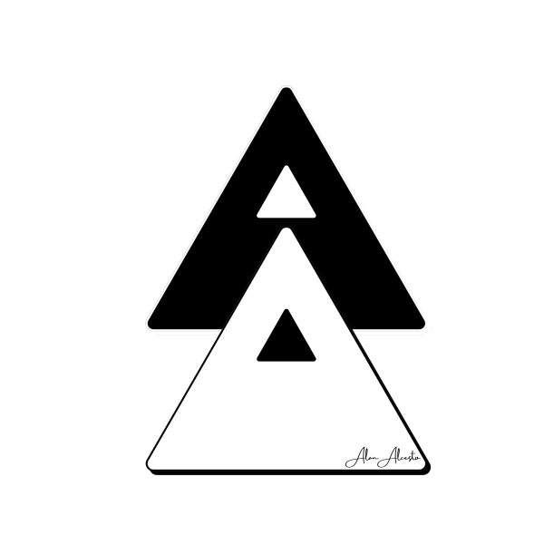
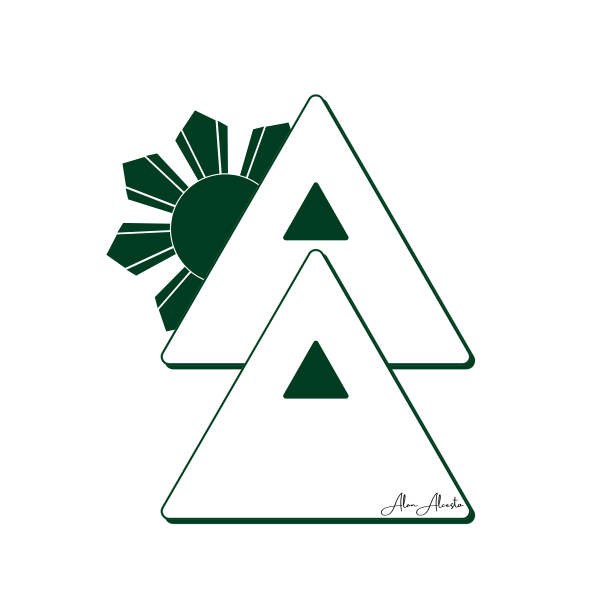

Technical specifications
File formats & assets
Each logo variation is made for a different context. All of them are SVG files, so they stay sharp at any size.
Brand guidelines
How to use the logo
Clear space
Leave space around the logo equal to the height of the sun on every side. Keep text, images and edges outside that zone.
Minimum size
- Screen: 120 px wide minimum for the full logo.
- Print: 0.75 inch (20 mm) wide minimum.
- Below those sizes, use the simplified favicon mark.
Do and don’t
- Do use the SVG files so edges stay sharp at any size.
- Do choose the variation that matches the background contrast.
- Do use the black and white versions when only one color is available.
- Don’t stretch, rotate or recolor the triangles.
- Don’t place the outline version on dark or busy backgrounds.
- Don’t remove the sun from the primary logo or add effects like shadows.